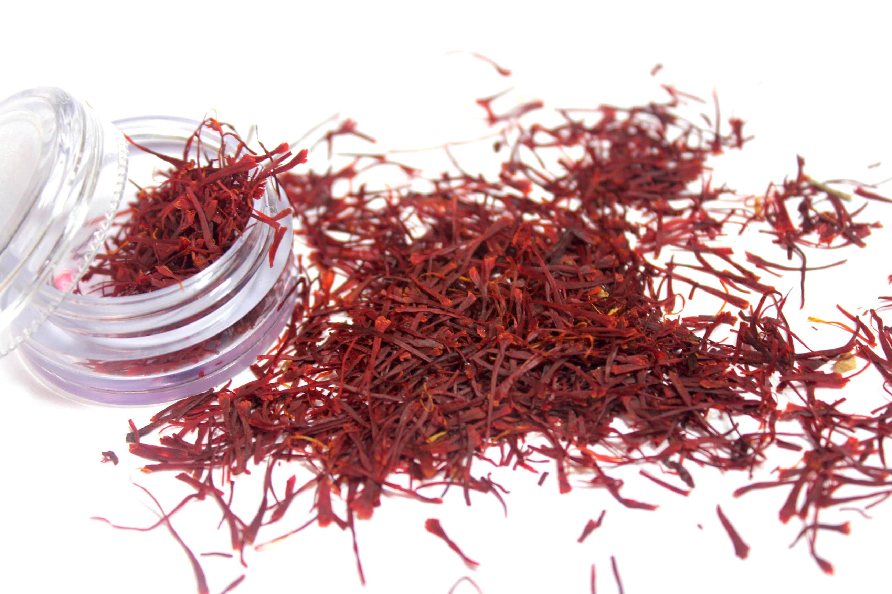

केसर के फायदे
=========
केसर स्वास्थ्य के लिए बहुत फायदेमंद होता है। केसर की खुशबू बहुत तेज होती है। केसर को विभिन्न प्रकार के व्यंजनों में डालकर खाया जाता है। भारत में केसर (जाफरान) कश्मीर में पैदा होता है। गर्म पानी में डालने पर केसर से गहरा पीला रंग बनाया जाता है। पेट संबंधित परेशानियों के इलाज के लिए केसर बहुत फायदेमंद है। चोट लगने या झुलसने पर भी केसर का लेप लगाने से फायदा होता है। आइए हम आपको केसर के गुणों की जानकारी देते हैं।
केसर के गुण –
पेट संबंधित बीमारियों के इलाज में केसर बहुत फायदेमंद है। बदहजमी, पेट-दर्द व पेट में मरोड़ आदि हाजमे से संबंधित शिकायतों में केसर का सेवन करने से फायदा होता है।
चन्दन को केसर के साथ घिसकर इसका लेप माथे पर लगाने से सिर, आंखों और दिमाग को शीतलता मिलती है। इस लेप को लगाने से दिमाग तेज होता है।
सिर दर्द को दूर करने के लिए केसर का उपयोग किया जा सकता है। सिर दर्द होने पर चंदन और केसर को मिलाकर सिर पर इसका लेप लगाने से सिर दर्द में राहत मिलती है।
नाक से खून बहने की समस्या के उपचार के लिए भी केसर बहुत फायदेमंद है। नकसीर होने पर चंदन के साथ केसर को मिलाकर लेप लगाइए, नाक से खून बहना बंद हो जाएगा।
बच्चें को अगर सर्दी और जुकाम की समस्या हो तो केसर का दूध सुबह-शाम पिलाने से बच्चे की सर्दी और जुकाम में राहत मिलेगी।
बच्चें की सर्दी अगर समाप्त न हो रही हो तो बच्चे की नाक, माथे, छाती और पीठ पर केसर, जायफल और लौंग का लेप लगाने से फायदा होता है।
अतिसार में भी केसर बहुत फायदेमंद है। अतिसार होने पर केसर को जायफल, आम की गुठली, सोंठ को पत्थर पर पानी के साथ घिसकर इसका लेप लगाने से फायदा होता है।
महिलाओं के लिए केसर बहुत फायदेमंद होता है। महिलाओं की कई शिकायतें जैसे - मासिक चक्र में अनियमिता, गर्भाशय की सूजन, मासिक चक्र के समय दर्द होने जैसी समस्याओं में केसर का सेवन करने से आराम मिलता है।
हिस्टीरिया जैसी बीमारियों को नियंत्रित करने में केसर का सेवन फायदेमंद होता है।
त्वचा के झुलसने या चोट लगने पर केसर के लेप लगाना चाहिए। इससे तुरंत फायदा होता है और नई त्वचा का निर्माण जल्द होता है।
केसर को दूध के साथ पीने से शारीरिक शक्ति बढती है।